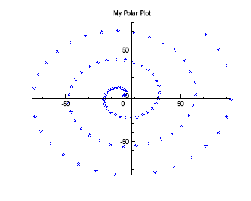

With IDL Graphics, you can display polar plots with the POLARPLOT function. This function requires two vector parameters. The first parameter is the radius, and the second is the angle (expressed in radians). Before the plot displays, these variables are first converted from polar to Cartesian coordinates.

The code shown below creates the graphic shown above. You can copy the entire block and paste it into the IDL command line to run it.
; Make a radius vector.
R = FINDGEN(100)
;Make a vector.
THETA = R/5
; Display the polar plot
pplot = POLARPLOT(r, theta, 'b*', TITLE='My Polar Plot')
The line above could also be entered as:
pplot = POLARPLOT(r, theta, $
TITLE='My Polar Plot', COLOR='blue', SYM_INDEX=2, LINESTYLE=6)
| • | TITLE - defines the title for the window. |
The notation at the end that shows a series of alpha, numeric, and symbol characters that defines how the plot appears. In this case, 'b*' defines the color blue, and the plot symbol as an asterisk.
| • | SYM_INDEX - defines a symbol to use. |
| • | COLOR - defines the color to use for the element. |
| • | LINESTYLE - defines the style of line to use. By default, a line appears in addition to the symbol defined in SYM_INDEX. To display no line, use LINESTYLE=6. For more information, see Formatting IDL Graphics Symbols and Lines |
| • | Change Graphics Properties |
| • | Multiple Graphics in One Window |
| • | Saving Graphics |
| • | PLOT |
| • | POLARPLOT |
| • | Graphics |
| • | Formatting IDL Graphics Symbols and Lines |